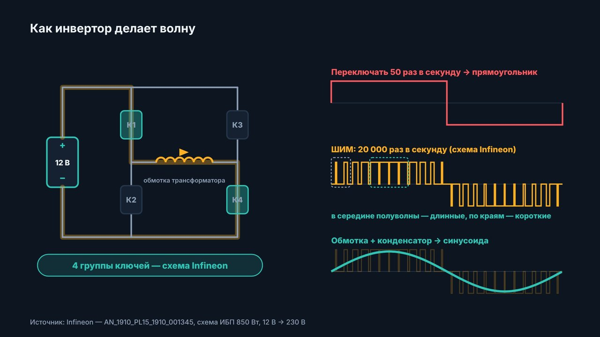
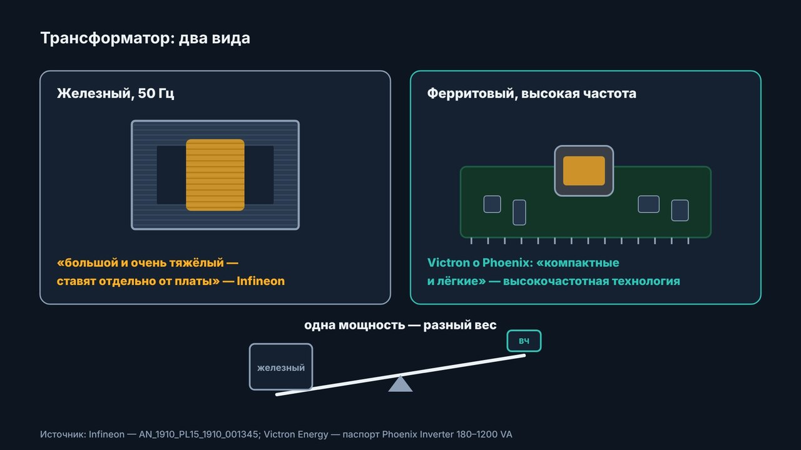
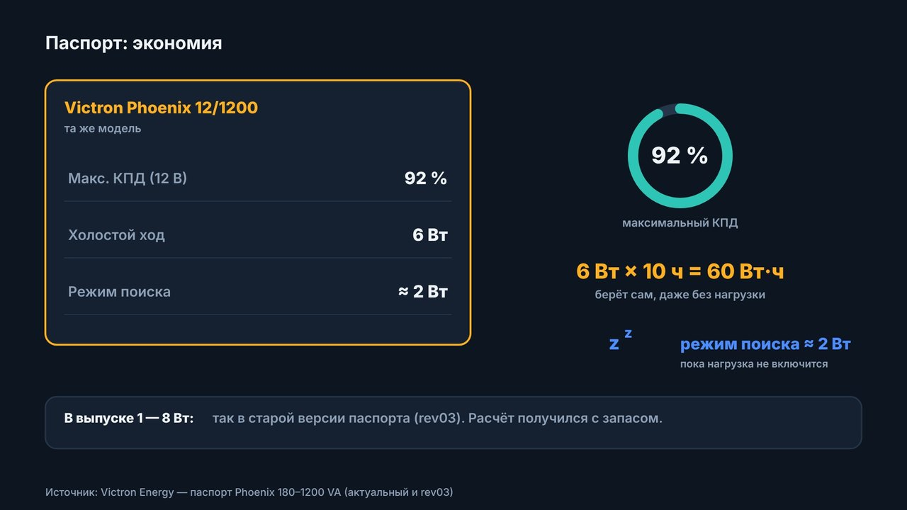
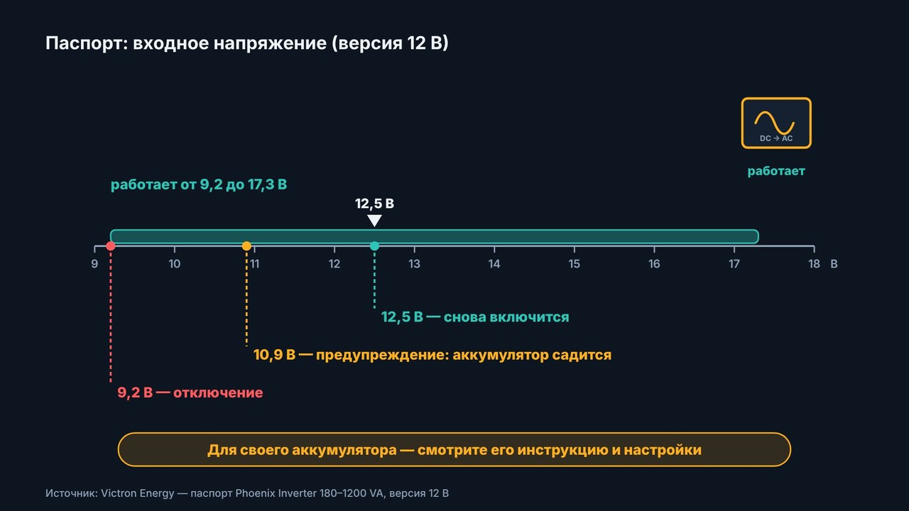

Как устроен инвертор и как читать его паспорт
Инвертор делает из 12 В постоянного тока аккумулятора 230 В переменного, как в розетке. Разбираем, что у него внутри, почему для холодильника, котла и насоса нужна только чистая синусоида и какие строчки паспорта проверить перед покупкой.
Ролик, 5:36. Не открывается? Смотреть на YouTube или читайте разбор ниже — в нём всё то же самое.
Впишите мощность своих приборов и самого мощного мотора — калькулятор покажет, какая нужна длительная и пиковая мощность и какой ток пойдёт от аккумулятора.
Открыть калькуляторДве задачи инвертора
Аккумулятор даёт постоянное напряжение: 12 В, всегда в одну сторону. В розетке напряжение переменное: оно плавно растёт, падает, меняет направление, и полный цикл повторяется 50 раз в секунду. Поэтому у инвертора две задачи: поднять 12 В до 230 В и заставить напряжение качаться 50 раз в секунду.
Как получается волна
Внутри стоят электронные ключи — транзисторы, соединённые мостом; в эталонной схеме Infineon это четыре группы ключей. Они подключают аккумулятор к выходу то в одну сторону, то в другую. Если просто переключать их 50 раз в секунду, получится прямоугольник. Поэтому ключи щёлкают гораздо чаще — в схеме Infineon 20 000 раз в секунду — и меняют ширину импульсов: в середине полуволны импульсы длинные, по краям короткие. Обмотка трансформатора и конденсатор сглаживают импульсы, и на выходе получается синусоида.

Почему инверторы одной мощности весят по-разному
Напряжение поднимает трансформатор, и он бывает двух видов. Железный на 50 Гц Infineon в своей схеме описывает как большой и очень тяжёлый — его даже ставят отдельно от платы. Второй вид — трансформатор на ферритовом сердечнике, который работает на высокой частоте; Victron использует такую технологию в инверторах Phoenix и пишет, что они получаются компактными и лёгкими.

Чистая или модифицированная синусоида
Дешёвые инверторы с модифицированной синусоидой не делают плавную волну: напряжение резко растёт и падает и какое-то время стоит на нуле, прежде чем сменить направление, — по сути это разновидность прямоугольной волны. По данным производителя инверторов Samlex, от неё двигатели и микроволновки сильнее греются, часы в микроволновках и хлебопечках могут сбиваться, диммеры и регуляторы скорости вентиляторов работают неправильно, а некоторые зарядки для аккумуляторов электроинструмента могут повредиться. Infineon тоже пишет, что инверторы с синусоидой предпочтительнее, чтобы не нагружать некоторые типы приборов. Для холодильника, котла и насоса — только чистая синусоида.

1Мощность: ватты при 40 °C и пик
Пример — Victron Phoenix 12/1200. Первая строчка паспорта — 1200 ВА; это не ватты. Ниже: длительная мощность 1000 Вт при 25 °C и 900 Вт при 40 °C — в жару инвертор отдаёт меньше, поэтому считайте по ваттам и по худшей температуре. Пиковая мощность 2400 Вт — запас на короткий рывок, например на запуск компрессора холодильника. Пуск компрессора берём как 5 × рабочей мощности, как в выпуске 1.

2КПД, холостой ход и режим поиска
Максимальный КПД версии на 12 В — 92 %. Холостой ход — 6 Вт: столько инвертор берёт сам, даже когда ничего не подключено; за 10 часов это 60 Вт·ч. В режиме поиска инвертор почти засыпает и берёт около 2 Вт, пока не включится нагрузка. В выпуске 1 мы считали 8 Вт холостого хода — так в более старой версии паспорта (rev03), расчёт получился с запасом.

3Входное напряжение
Версия на 12 В работает от 9,2 до 17,3 В. При 10,9 В предупреждает, что аккумулятор садится, при 9,2 В отключается и снова включается, когда напряжение поднимется до 12,5 В. Это защита от глубокого разряда, но для своего аккумулятора всё равно смотрите его инструкцию и настройки.

4Почему мощным системам — 24 или 48 В
1000 Вт от литиевого аккумулятора на 12,8 В — около 85 А, на 25,6 В — около 42 А, на 51,2 В — около 21 А. Чем больше ток, тем толще провода и мощнее предохранитель. Infineon пишет, что в более мощных системах нужно более высокое напряжение аккумулятора, чтобы ограничить ток; поэтому Victron выпускает тот же инвертор на 12, 24 и 48 В.

Чек-лист: как читать паспорт инвертора
- Чистая синусоида (pure sine wave).
- Длительная мощность в ваттах при 40 °C, а не только при 25 °C, — больше суммы ваших приборов.
- Пиковая мощность — больше пускового рывка.
- Холостой ход поменьше и, если есть, режим поиска.
- Входное напряжение — как у вашего аккумулятора; посмотрите, при каком напряжении инвертор отключается.
Сечение кабеля и предохранитель — по инструкции вашего инвертора.
Источники
- Victron Energy (Нидерланды) — паспорт Phoenix Inverter 180–1200 VA: 230 В, 50 Гц; 12/1200: 1200 ВА, 1000/900 Вт при 25/40 °C, пик 2400 Вт, КПД 92 %, холостой ход 6 Вт, поиск 2 Вт, вход 9,2–17,3 В; «hybrid HF technology».
- Victron Energy — паспорт Phoenix Inverter, rev03: холостой ход 8 Вт.
- Infineon (Германия) — Low frequency transformer based SOHO UPS design: полный мост, ШИМ 20 кГц, железный и ферритовый трансформаторы, напряжение аккумулятора и ток.
- Samlex (Канада) — Pure Sine Wave versus Modified Sine Wave: форма модифицированной синусоиды и что от неё страдает. Европейского источника с таким списком мы не нашли.
Проверено 15 ноября 2026 г. Нашли ошибку — напишите в комментариях под роликом.